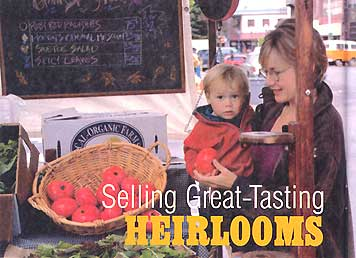

Heirloom vegetables are all the rage right now. Edible nostalgia, they've been called. For good reason: Heirlooms bring the old-time taste back to vegetables, and call to mind all the romance of country living at its best. People who've never planted a seed in their lives are seeking heirlooms out at farmers markets, and gourmet chefs are featuring the produce on their menus.
Savvy market growers, naturally, want to capitalize on this trend. Their problem: Tracking down enough heirloom seed.
For the home gardener, obtaining heirloom seed is no big thing. Many seed companies now offer heirlooms, and there are numerous seed swapping organizations and bio-diversity groups whose sole purpose is to preserve these varieties by distributing seed in one manner or another (see Heirloom Seed Sources). But too often, this means providing only enough seed for a sample grow-out. The idea is that the gardener plant those seeds the first year in order to produce enough new seed for a full crop in subsequent years.
"This is difficult for the commercial grower," points out Rich Sisti, honcho of Catalpa Ridge Farm in Wantage, New Jersey. Sisti sells his produce at three different locations; one in downtown Manhattan, one in Hoboken, and one in his home town. in addition, he grows tomato transplants for a supermarket chain. "I can't deal with just 25 seeds. I mean, what am I going to do with that few?
One solution for Sisti, along with about 80 other farmers and market growers, is the Garden State Heirloom Seed Society. Like most grassroots heirloom seed organizations, GSHSS has home gardeners, market growers, and farmers among its 600 members. Unlike most other such groups, at GSHSS the emphasis is on helping the farmers and market growers.
"The hallmark of GSHSS," says founder Joe Cavanaugh, "is that we provide our growers with seed at no cost. This lets them trial out numerous varieties of heirloom vegetables, and stay up to date on what's popular." Some of his members, he points out, test 50 or more varieties a year. "We encourage them to save their own seed," he notes, "because in most areas seeds adapt to the area where they're grown, and you will get better production if you save the seed yourself." While growers are urged to save seed, it is not a requirement by any means. Sisti, for instance, does not save seed because of time constraints. "We deliver to our members through October," he points out. "When you are busy making deliveries, it's hard to spend the time it takes to save seed."
GSHSS grew out of Cavanaugh's own interest in heirloom vegetables. He'd been a gardener from the time he was 9 years old. "I specifically remember my mother going out to buy me plants," he recalls. "The two varieties I tried were `Big Boy,' a hybrid, and the old 'Rutgers' variety. I can vividly remember a difference in the taste."
Later in life he became a Civil War reenactor. His interest in living history and his interest in heirlooms created a natural mix. "As a reenactor you can dress up, you can do reenactments, you can do camps. What you cannot do is actually experience what the Civil War was like. One thing you can do is eat their food. Trying to seek that out is what really propelled me into heirlooms."
After joining the international Seed Saver's Exchange (based in Decorah, Iowa) early in it's history, Cavanaugh started growing out a wide variety of heirlooms. Not just Civil War era varieties, but any heirloom he could get his hands on. "I just couldn't believe the difference in taste compared to the hybrids we'd been growing for years. Most of the hybrids are basically horrible in taste compared to the heirlooms."
With a compelling need to share this information, Cavanaugh and his wife Roberta started a small market garden to see what sort of interest people would have. "This was in the early '90s," he recalls. "Heirlooms were known, but they weren't popular like they are today. But our customers loved everything we grew. We got nothing but superb feedback. They really wanted the heirlooms we were growing."
After three years, they decided to try a different direction. "I told Bobbi, `We're sitting on a gold mine, what are we going to do with it? Are we going to start our own farm, and really capture the market? Or are we going to use this as a vehicle to help farmers and market growers?'
"We decided we were go ing to put this so-called gold mine to work helping people. Especially here in New Jersey, where farmers are really hard-pressed with the high cost of everything. So, we formed GSHSS for that specific reason."
Ironically, the first members were gardeners, rather than market growers. "And I'd like to stress," Cavanaugh says, "that, although one of the major aims of this organization is to help farmers and market growers, the things we do are also available to help home gardeners. In fact, the bulk of our membership is not commercial growers."
But in its six years' existence, GSHSS has become a voice for the commercial production of heirloom vegetables. Providing seed is just one of the ways it supports farmers.
Each year the organization grows about 250 heirloom vegetable varieties and evaluates their flavor, productivity, pest resistance and marketability. Varieties for these trials come from numerous sources. Some are local. "If we know a farmer is growing a certain heirloom variety, we take seed for it and make sure we increase production so that we have the seed available for our members in larger quantities," he says.
"Most new hybrids are basically horrible in taste compared to the heirlooms,"
Other varieties come from people who have heard about the group's work. One bush bean came to them, for instance, from a woman in a local church who knew of their work and handed them a jar full of seed. Her mother had come through Ellis island bringing the family bean seeds with her from Italy. Now there was nobody left to grow them, and she was afraid they'd go extinct.
Another example is `Tom Patti's Italian Paste' tomato. "It comes from a fellow across the river in Pennsylvania," says the GSHSS head man, "and in my opinion it's much better than the highly touted `Amish Paste'." Tom Patti was in a farmers market in a little town and tasted this tomato variety. He liked it so much he bought a couple, scraped the seeds out, and took them home. It's been very popular ever since.
Not everything is local. The Seed Savers Exchange often is the source of a "new" variety. And the GSHSS has access to the U.S. Department of Agriculture seed banks as well.
In the fall, a special growers report is sent to GSHSS market grower members. This report details the results of that year's trials. "So," Cavanaugh stresses, "a grower in our organization will always be on top of things, with a wide variety of new vegetables they can test themselves."
Sometimes growers don't even test the seeds. Based on the credibility of GSHSS reports and familiarity with their marketplace, farmers sometimes skip the trial stage and go right to production. Ed Lidzbarski in Jamesburg, New Jersey, for instance, operator of E.R. & Son Farm, is also the largest wholesaler of organic vegetables in the Garden State. When GSHSS reported on its trial of the `Yellow Out/Red In' tomato, he immediately asked for enough seed to grow a full crop. "He was fully confident of his ability to sell it," Cavanaugh reports.
Lidzbarski is one of several GSHSS members who actually are selling heirloom plants and produce to supermarkets - a sure sign that they have been mainstreamed. But it often takes a little creative marketing to land such accounts, because heirlooms, by their very nature, have to sell at a higher retail price than standard varieties.
Recently, GSHSS has gotten more heavily involved in helping farmers market heirlooms as well as grow them. "The way you have to sell heirlooms," Cavanaugh says, "is to get people to taste them. No matter how you're marketing, whether it's a farm stand, a farmer's market, a CSA, or selling to restaurants, we always recommend you cut some up and give them to your customers to taste." He adds that if you're marketing to restaurants it's important that your contact, in most cases, be the chef, not the owner. "Once you get the customer to taste an heirloom, they're not going to be buying hybrids anymore. They're coming back to you. It's the same thing whether it's garlic, or tomatoes, sweet peppers or any of the fresh stuff."
Catalpa Ridge's Rich Sisti adds that you have to know how your customers do business. With supermarkets, for instance, you can't be delivering one box of lettuces every three weeks. If you can't supply- them several boxes a week throughout the season, they're not interested in dealing with you."
Baker Creek Heirloom Seed Co.
Mansfield, Mo.
Bountiful Gardens
Willits, California
Johnny's Selected Seeds
Albion, Maine
Maine Seed Saving Network
207-362-0751
Penobscot, Maine
Native Seeds/SEARCH
Tucson, Ariz.
Redwood City Seed Co.
Redwood City, Calif.
R.H. Shumway's
Graniteville, S.C.
Sand Hill Preservation Center
Calamus, Iowa
Seed Savers Exchange
Decorah, Iowa
Seeds of Change
Santa Fe, N.M.
Southern Exposure Seed Exchange
Mineral, Va.
Terroir Seeds LLC
Woodstock, Ill.
Last year GSHSS started a special tomato-tasting in Hoboken designed to bring growers and chefs together. "It was just a trial run," Cavanaugh points out. "We brought some of our growers and had some restaurant people there. It was very successful, so we're going to do it again on a larger scale." Working with the Hoboken restaurant association. which will bring the chefs, GSHSS will bring the tomatoes for a tasting. "Basically, this brings our farmers together with the ritzy restaurants. If the chefs like what they taste, we'll say, 'Here's the farmer who grew it. You guys get together and work out a deal. GSHSS will provide the seed, at no cost to the farmer, to assure he can supply your needs."' An interesting sidelight to this event is that it's co-sponsored by the Hoboker Museum.
"This was just the beginning," Cavanaugh says. "Next year we're going to have a day for salad greens, in the spring. And when we have the tomato-tasting in the fall, we'll introduce other heirloom vegetables, like peppers, as well."
As he notes, if this works in Hoboken, it can work anywhere. He envisions working with his growers in southern New Jersey to develop the same sort of system for the Philadelphia market. "If it works here, than any other organization in the country can pick up on it and do the same thing," he concludes.
GSHSS has already spawned similar groups in other states. Using the New Jersey group as a model, heirloom seed societies have started in Oklahoma, New York and Rhode Island, and other states have expressed interest. (Contact Cavanaugh for details - see address below.) "This isn't to imply that we are a New Jersey organization only," Cavanaugh quickly points out. "We have members across the country, and in several foreign countries." But he recognizes that it is much more efficient to have a local organization on-scene when acting to bring growers and customers together.
What's coming in the future? In the planning stages right now are a series of annual market grower meetings. "We'll ask our most successful growers to be the speakers," Cavanaugh says. "But the most important aspect is that we'll bring all the farmers together where they can discuss their marketing techniques, and share with each other what's selling, and how they sell it."
GSHSS is also planning to expand frequency of its publications. Right now, for instance, it publishes an annual magazine called the Summer Solstice edition. It includes articles on heirlooms, the history of various varieties, gardener profiles, farmer profiles, and information about growing and selling heirlooms. "The farmer who reads that can come up with a lot of information on what works," Cavanaugh says. Plans are to expand the publication to a quarterly, and to include more articles on marketing and selling.
In the spring GSHSS publishes its Reprint Edition, which includes excerpts from its vast collection of old seed catalogs. These are often used as marketing tools by growers. "One of our growers in Maine, for instance, specifically asked for copies of catalog pages that show the varieties she grows," Cavanaugh notes. "Seems that when customers see them, they say something like, `this is coming out of an old seed catalog. I need to try that.' Several of our growers have picked up on this, and we'll be doing more of these reprints."
Since the heirloom movement's beginning in the mid-1980s, there has been one stumbling block to its growth. Heirloom growers have been mostly home gardeners and history buffs. The general public and restaurateurs might have heard about the great flavor of heirlooms, but had no ready local sources. GSHSS and similar organizations have taken several giant steps towards closing that gap. More are on the way. For more information, contact: Joe Cavanaugh, Garden State Heirloom Seed Society, PO Box 15, Delaware, NJ 07833, 908475-4861, njheirloom@earthlink.net.
|
 RICK WETHERBEE Heirloom plants bring the old-time taste back to vegetables. |
|
|